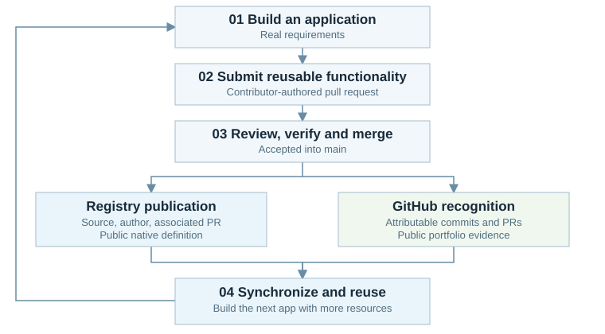

Documentation / Contribute what others can reuse
Contribute what others can reuse
Applications are the starting point. Shared infrastructure is what accumulates.
On this page
Choose your contribution1. Build and isolate the reusable part2. Fork and create a focused branch3. Verify and sign off4. Submit for review5. Registry publication and attributionReport a limitation insteadChoose your contribution
| Surface | Appropriate contribution | Evidence |
|---|---|---|
| projects/ | Sanitized reference application | Runnable PEP, fixtures, instructions |
| registry/ | Reusable supported native capability | Typed interface, tests, documented implementation |
| mode/ | Domain definitions and reusable network composition | Dependencies, examples, contract coverage |
| Core / RFC | Runtime, syntax or architectural change | Minimal reproduction, proposed behavior, regression tests |
Do not add arbitrary executable plugins. The current runtime only supports allowlisted native operations and PEP composition.
1. Build and isolate the reusable part
Keep your app in your own repository. Remove application-specific secrets and customer data from the contribution. Write a small reference example, state the contract and demonstrate valid, invalid and boundary inputs. Include licensing information.
2. Fork and create a focused branch
gh repo fork Affect-Dynamics/ic3o-developer-preview --clone
cd ic3o-developer-preview
git switch -c contribution/my-modeThese commands assume you are not already in a checkout and have permission to create a fork. Make changes in the fork, never in the activated snapshot.
3. Verify and sign off
npm test
git status
git diff
git add path/to/your/changes
git diff --cached
git commit -s -m "Add reusable network"Replace the path with your actual changed files. Review tests and staged content before committing. Sign-off under the DCO certifies your right to contribute; it is not cryptographic commit signing. See DCO ↗ and contribution policy ↗.
4. Submit for review
gh ic3o contributeRun from your fork. GitHub CLI handles PR creation interactively, including pushing when necessary. Explain what changed, why it is reusable, how to reproduce results and what remains unsupported. Maintainers review and merge accepted work; passing tests alone does not establish correctness.
5. Registry publication and attribution

The public registry publishes revision-pinned native definitions with path-specific commit history and associated merged PR metadata when available. GitHub determines profile contribution eligibility. No synthetic activity or guaranteed profile credit.
Inspect actual registry entries · Publication details ↗
Report a limitation instead
If the framework cannot express your requirement, submit a minimal reproducible network instead of forcing a workaround into a Mode. Include active revision, definitions, input, expected result and actual error.
gh ic3o status
gh ic3o reportSubstantial core changes use the RFC process ↗. Read governance ↗ and security policy ↗.